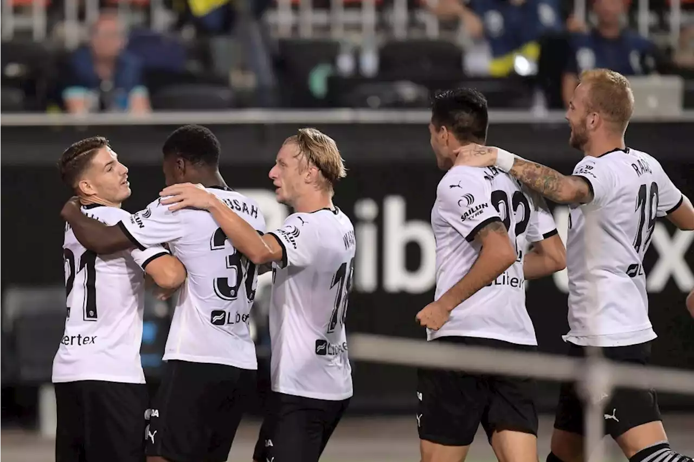
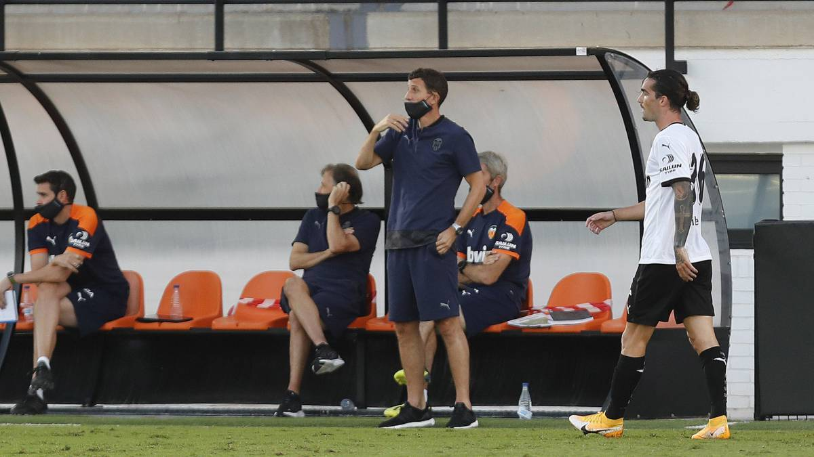

Final Score: Valencia 4-2 Levante
Two goals from substitute Manu Vallejo helped Valencia achieve a comeback win over Levante in the Valencia derby. Here are five key takeaways from the match:
1. A Masterclass From Jose Luis Morales
The 33-year-old started his 2020/21 La Liga campaign with a bang, scoring a goal only 36 seconds into the match. He took advantage of Valencia’s lack of focus, and completed an excellent solo run into his opposition’s penalty area and slotted the ball past Jaume. He would go on to have an excellent first half, where he caused major problems for Valencia’s backline. He used his pace and physicality to get in behind into the wide areas of the pitch, where he could provide service into the box for his teammates. He eventually grabbed a second goal in the 36th minute, when he drove a rocket of a shot into the roof of Valencia’s net from just inside their penalty area. His second half was quieter, but he still remained Levante’s main outlet for attacking options in the match.
2. (Some) Different Players, Same Valencia
Valencia’s starting 11 looked like a completely different team from last season, due to the fact that they lost over half of their starters (Garay, Parejo, Coquelin, Torres, Rodrigo, Cillessen [who hasn’t left yet, but he wasn’t included in the squad against Levante]). Their playstyle was very similar to last year’s, however. Attacking-wise, they looked dangerous, using their pace and creativity to trouble Levante’s defense. Kang-in Lee and Maxi Gomez were both fantastic last night, with Gomez bagging a goal and Lee assisting two. In defense, it didn’t look like much had changed. Valencia’s backline (and defensive midfielders) are still error-prone and inconsistent, which will cost them greatly this season if it is not remedied soon.

3. Youth Prospects Provide Valencia With Mixed Performances
Valencia gave two academy graduates their debuts against Levante, and their performances were on the opposite end of the spectrum. First, there was Vicente Esquerdo, who partnered Geoffrey Kondogbia in midfield. The 21-year-old had a tough match, where he misplaced a few passes, and was the cause of Levante’s second goal, where he had an easy pass intercepted deep in Valencia’s defensive third.
Then, there was Yunus Musah, who started in the right midfielder position. The 17-year-old had an amazing game. He is lightning fast and used his pace and physicality to bully Levante left-back Carlos Clerc. His passing and dribbling were also top-notch, and he should have had an assist had Maxi Gomez not misplaced a shot from the top of the penalty area. He will definitely be a player to watch this season, and if Valencia aren’t careful, he could be poached by a bigger team.
4. Javi Gracia Nails His Substitutions
Gracia made 3 key substitutions in the 71st minute, when the match was tied 2-2. The first was to bring on Uros Racic for a poor-performing Esquerdo. Racic, who just returned from a loan spell at Famalicao in Portugal, is a defensive midfielder who was brought on to provide more balance to a Valencia side that was throwing players forward in attack.
The second and third substitutions brought on Manu Vallejo and Denis Cherysev for Kang-in Lee and Goncalo Guedes respectively. These two would go on to work wonders for the team, as Cherysev would deliver the cross (that Maxi Gomez expertly dummied) to give Vallejo his first goal. Late in stoppage time, Vallejo would grab another, taking advantage of the little numbers Levante had left on defense as they searched for an equalizer.

5. Both Teams Have Serious Work To Do:
Both Valencia and Levante need to bolster their squads if they want to finish in the top half of La Liga this season. Valencia needs to either decide on an official center back partner for Gabriel Paulista or sign one. They also need to bring in a central midfielder who can play alongside Kondogbia (though Racic may have proven that he can handle this role). Valencia’s squad has an abundance of fringe-players, who are all talented, but are not good enough to be starters week-in and week-out. Some of these players need to be let go, or Valencia must accept that their team is in a decline and not set their hopes as high as they have in the past few years. Javi Gracia has a lot of decisions to make, and I do not envy him one bit.
Levante’s problems are a bit different. They don’t need to make any signings, they just need to improve their system. In the first half of the match against Valencia, they looked great; they had a purpose and a system that they were following. In the second half, this system became muddled, and they began to become frantic in their possession and attacks. Manager Paco Lopez needs to work with his squad and sort out the kinks, and all should be fine for Levante. It is only the beginning of the season after all.